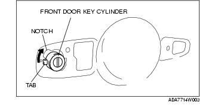

1. Remove the front outer handle.
2. Detach the front door key cylinder rod.
3. Turn the front door key cylinder and move the tab to the notch.

4. Pull the front door key cylinder outward, then remove it.
5. Install in the reverse order of removal.